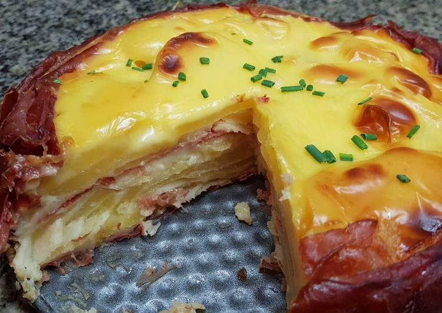
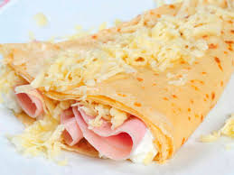
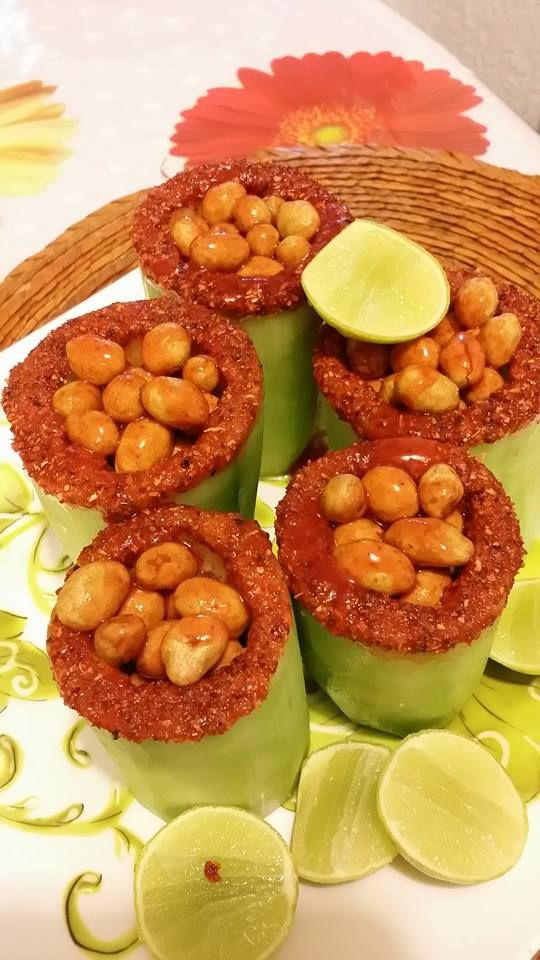

cheesecake de jamon
ingredientes:
- 100 gr de galletas saladas
- 80 gr de mantequilla
- 300 gr de queso crema
- 250 gr de ricotta en crema
- 6 rebanadas de jamon
- sal
- pimienta
- cebollin
modo de preparacion:
1. Machaca las galletitas hasta hacerlas polvo y mézcalas con la mantequilla fundida.
2. Coloca esta mezcla en el fondo de los moldes (colocados sobre papel sulfurizado) y deja que se refrigere.
3.En un bol, mezcla el queso crema y el ricotta y añade 3 lonchas de jamón picadas. Añade, además, sal, pimienta y cebollino y mezcla todo.
4.Vierte esta mezcla en los moldes alisando la superficie. Refrigera mínimo 6 horas.
5.Con la ayuda de un cortador del mismo tamaño que nuestros moldes, corta las lonchas de jamón restantes.
6.Coloca el circulo de jamón sobre el cheesecake previamente desmoldado. Espolvorea cebollino por encima.

crepas saladas
ingredientes
- 1 taza y media de harina
- 2 tazas de leche
- sal al gusto
- jamon
- queso
modo de preparacion
mezclas la harina la leche y la sal al gusto en un bowl
hasta hacer una masa parecida a la de los hot cakes pero mas espesa
poner a calentar el sarten a fuego medio y esparcir poca mezcla en el,
cuando este lista agregar el queso y una rebanada de jamon doblar por la mitad y listo.

pepinos con cacahuates
ingredientes
- pepinos
- cacahuates
- chile
- chamoy
- limon
- tajin
modo de preparacion
pelas y cortas los pepinas por la mitad despues les sacas las semillas con una cuchara
en un plato poner tajin, chamoy,chile y limon y lo revuelves
pasas la mitad del pepino por la mezcla de tajin
hechas cacahuates dentro del pepino
poner mas chamoy,limon y chile al gusto.
